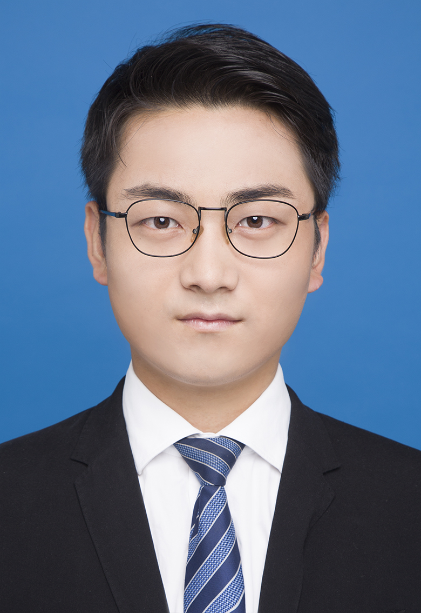

Zhen WeiMSc. Student
University of Chinese Academy of Sciences
Email: weizhen [dot] iie [dot] ac [dot] cn 

|
 |
I am currently a final year MSc. student in the University of Chinese Academy of Sciences (UCAS). Before that, I received the B.Eng. degree from Yingcai Honors School, University of Electronic Science and Technology (UESTC) in 2016.
My research interests include computer vision and deep learning.
I'm now looking for a Ph.D. position that starts from 2020 fall.
Publications
-
Building Detail-Sensitive Semantic Segmentation Networks with Polynomial Pooling
Jingyi Zhang, Zhen Wei, Ionut Cosmin Duta, Fumin Shen, Li Liu, Fan Zhu, Xing Xu, Ling Shao, Heng Tao Shen
27th ACM International Conference on Multimedia (ACM MM), 2019.
-
Building Detail-Sensitive Semantic Segmentation Networks with Polynomial Pooling
Zhen Wei, Jingyi Zhang, Fumin Shen, Li Liu, Fan Zhu, Yi Zhou, Si Liu, Ling Shao
IEEE Conference on Computer Vision and Pattern Recognition (CVPR), 2019.
[paper] [supp.] -
Accurate Facial Image Parsing at Real-Time Speed
Zhen Wei, Si Liu, Hefei Ling
IEEE Transactions on Image Processing (TIP), 2019.
[paper] -
Deep Semantic Collage Generation for Image Retargeting
Si Liu, Zhen Wei, Yao Sun, Xinyu Ou, Junyu Lin, Bin Liu, Ming-Hsuan Yang
IEEE Transactions on Image Processing (TIP), 2018.
[paper] [S-Retarget Dataset] -
Learning Adaptive Receptive Fields for Deep Image Parsing Network
Zhen Wei, Jinqiao Wang, Hanjiang Lai, Si Liu
IEEE Conference on Computer Vision and Pattern Recognition (CVPR), 2017.
[paper] [supp.] -
A weakly supervised method for makeup-invariant face verification
Yao Sun, Lejian Ren, Zhen Wei, Bin Liu, Yanlong Zhai, Si Liu
Pattern Recognition (PR), 2017.
[paper] -
Deep multi-context Network for FINE-GRAINED VISUAL RECOGNITION
Xinyu Ou, Zhen Wei, Hefei Ling, Si Liu, Xiaochun Cao
IEEE International Conference on Multimedia & Expo's Workshop on Microsoft Research Image Recognition Challenge(ICMEW), 2016.
[paper]
Honors & Awards
- 2nd Prize Winner for the University's Bachelor Thesis Award, (top 2/5000+), 2016.
- 3rd Prize in Microsoft Research Image Recognition Challenge, 2016.
- Undergraduate Scholarship of UCAS, 2016.
- Meritorious Winner, the Interdisciplinary Contest in Modeling, COMAP, 2015.
Professional Activities
-
Conference Reviews
WACV 2016, 2017, 2018
-
Journal Reviews
Journal of Visual Communication and Image Representation

© Zhen Wei | Last updated: Jun. 2019